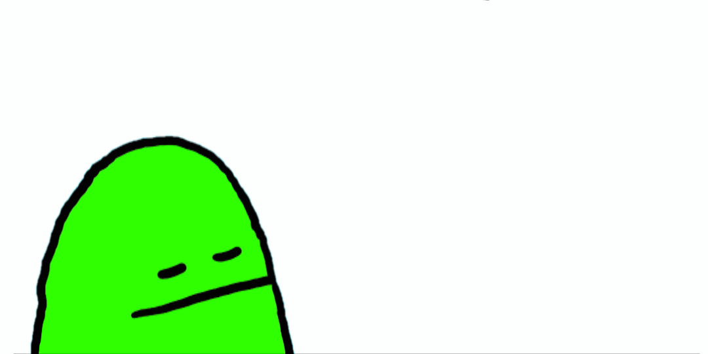

Welkom op de website van
oftewel Marie-Anne Faustinelli.
een vers van de HKU afgestudeerde contentmaker.
(en regisseur van Maar Als Iedereen Zo Denkt)
op dit moment is deze website nog in de maak, maar hieronder wel even wat handige details.
bio
Na 4 jaar Audiovisuele Media aan de HKU en 22 jaar tekenfilmpjes kijken ben ik er achter dat lange speelfilms of documentaires niet voor mij weg zijn gelegd.

Mijn projecten heb ik het liefst zoals mijn concentratieboog: lekker kort. Promo’s, uitlegvideo’s, muzieknummers, animaties, visuals, teksten, illustraties, spulletjes; ik maak het allemaal, want zelf kan ik er niet zo goed tussen kiezen.
En daarom werk ik graag in opdracht van iemand die een idee heeft waar ik achter sta. Dan kan ik een vorm bedenken, wat meestal resulteert in iets sympathiek, grappig’s, trippy’s of juist iets simpels. Het is óf heel duidelijk, óf gewoon vet. Wat er maar nodig is om de kijker te informeren of in actie te laten komen.
contact
Marie-Anne Faustinelli
marieannefausti@yahoo.com
06-29736755